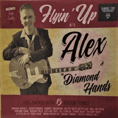

Alex and the Diamond Hands - Flyin' Up (2020)
01 - Jukebox Rocket (3:31)
02 - Suzie's Wiggle (3:06)
03 - Highest Mountain (2:58)
04 - Ah Itty Bitty Betty Lou (3:20)
05 - Roll On Train (2:46)
06 - Forlorn Town (3:42)
07 - Rockin' Pills (3:21)
08 - Cat Like That (3:42)
09 - All I Can Do (3:14)
10 - Strike Back (3:34)
11 - Oh Baby Baby (2:49)
12 - A Little Bit Of Yor Lovin' (3:25)
13 - Moon Harvester (4:14)
14 - Boogie Tonight (3:11)
15 - Suzie's Wiggle (alt) (3:18)
© DTR002 :: [Diamond Tone Records]
Notes
Review
221/366 (Project 366)
If you are looking for New Authentic Rock-A-Billy... so, here is one! A truly impressive listening experience. Not? Listen one more time! Actually, this is high fidelity mono diamond indeed. Beautiful and smooth arrangements, fanciful tones, lovely tunes, good enough lyrics. But the performance of songs is much more magic. By the way, all is written and composed by the lead vocal/guitar musician Alex. Chic! The compositions are quite varied, but retain the general style of the band. There is also an instrumental track (Moon Harvester) that suits the rockin' mood well. Very fantasy, very surprising. This is second album and kind of rebranding of the Diamond Hand (first album review: Diamond Hand - A Handful Of Diamonds... (2011)055/366). The line-up is different, but the leader of the band is still the same.
"Flyin' Up" with Alex and the Diamond Hands! Here are strolling tracks, boppin' a lot, rockin' and rollin', conceptual rockabilly with a twist and rather authentic feelings.